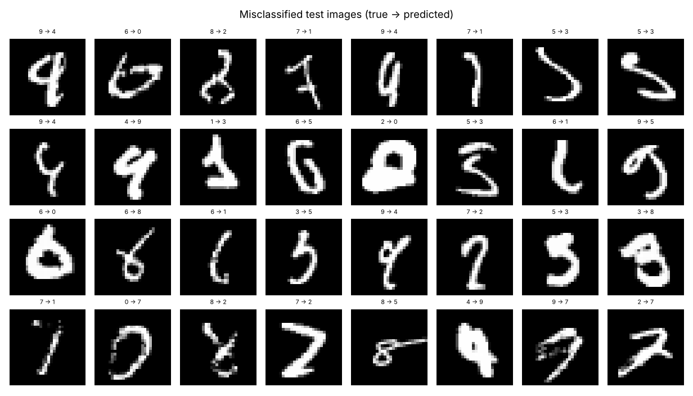

Convolutional Neural Network
A neural network that scans images with small learned filters, building up from edges to strokes to whole shapes.
Try it
Experiment: Draw a digit badly on purpose, say a 7 with a bar through it or a very slanted 4, and watch the second guess appear. Then look at which feature maps light up.
The idea
A regular network treats an image as a flat list of pixels and forgets which pixels are neighbours. A CNN slides small filters (3×3 in this repo) across the image. Each filter learns to detect a pattern, like a vertical edge or a curve, wherever it appears. The feature maps below the pad show where each of the 32 first-layer filters fires on your drawing.
Pooling layers shrink the maps so deeper layers see larger regions, and later layers combine simple patterns into strokes, loops and finally digits. The network on this page is the actual model trained in this repo: 99.67% accuracy on the 10,000 MNIST test images.
How it works, step by step
- Convolution: slide each small filter over the image to produce a feature map of where its pattern appears.
- Activation (ReLU) keeps the positive responses; batch normalisation keeps training stable.
- Pooling halves the width and height, keeping the strongest response in each 2×2 patch.
- Repeat conv → pool blocks (32, 64, then 128 filters here), average each final map, and classify with a small dense layer.
- Train with augmentation (small random rotations, shifts and zooms) so the network learns that a tilted 7 is still a 7.
Parameters per 3×3 conv layer: 3 × 3 × channels_in × channels_outThe same filter is reused at every position, so a CNN needs far fewer weights than a dense network and recognises a pattern anywhere in the image.
Strengths and weaknesses
Strengths
- State of the art for images
- Learns its own features: no hand-crafted inputs
- Robust to small shifts and distortions
- Transfer learning (e.g. a pretrained ResNet) works well on small data sets
Weaknesses
- Needs more data and compute than classic models (a GPU helps)
- Hard to interpret
- Many design choices: depth, filters, augmentation, learning rate
Use it when: Images and other grid-like data: photos, scans, spectrograms, handwriting.
Avoid it when: Plain tabular data, where trees and linear models are simpler and usually better.
In this repository
Dataset: MNIST (55,000 train, 5,000 validation, 10,000 test images)
The test images were never used for training or for picking the epoch. Most of the remaining errors are digits a person could misread too.

# Train on MNIST (repo benchmark: 99.67% test accuracy)
python models/12_cnn/model.py
# Train on your own images: one folder per class
python models/12_cnn/train.py --data my_images --arch resnet18 --pretrained
python models/12_cnn/predict.py --model ml_output/cnn/model.pt --images new_photos/Full code: models/12_cnn. Train it on your own data with
python models/12_cnn/train.py --data image_folder.
Check yourself
The output is a feature map showing where the pattern was found.
Weight sharing is the key idea.
Augmentation is a big reason this repo's CNN clears 99%.
Answer all three correctly to mark this model as learned.